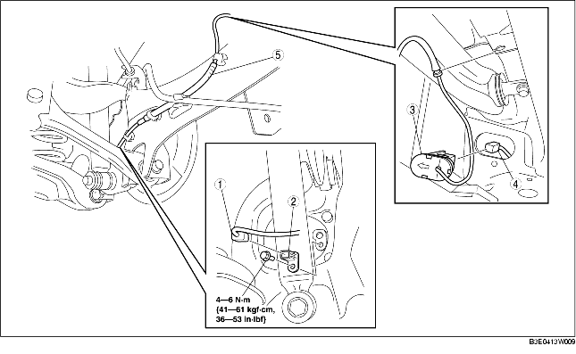

1. Déposer le cache inférieur (arrière).
2. Déposer les différents éléments selon l'ordre indiqué dans le tableau.
3. Pour la repose, suivre l'ordre inverse de la dépose.

.
|
1
|
Connecteur
|
|
2
|
Capteur ABS de vitesse de roue arrière
|
|
3
|
Cache d'orifice ABS
(voir la section Note sur la dépose de cache d'orifice ABS.)
(voir la section Note sur la repose de cache d'orifice ABS.)
|
|
4
|
Connecteur
|
|
5
|
Faisceau de câblage de capteur ABS de vitesse de roue arrière
|
1. Débrancher le connecteur du capteur arrière de réglage automatique du niveau. (véhicule équipé de capteur de réglage automatique de niveau)
2. Presser la languette du cache d'orifice ABS afin de séparer le cache d'orifice ABS de la carrosserie.
3. Déposer le cache d'orifice ABS de la carrosserie.
1. Faire passer le faisceau de câblage du capteur ABS de vitesse de roue arrière à l'extérieur du câble de frein de stationnement, comme indiqué dans l'illustration.
2. Reposer le faisceau de câblage du capteur ABS de vitesse de roue arrière.
1. Reposer le cache d'orifice ABS dans le corps de façon à ce que la flèche qui s'y trouve soit orientée vers l'extérieur du véhicule.